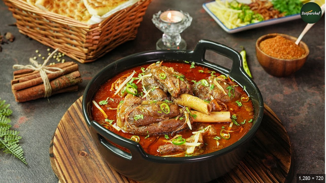

Mutton Nihari

Description
Nihari is a traditional dish and quite popular in India and Pakistan originated in the late 18th century
during the last throes of the Mughal empire. Nihari comes from the word ‘Nahr’ which means early morning.
The authentic way of preparation involves slow cooking of the meat with bone marrow for hours, mostly overnight,
and then served early morning as a breakfast dish.Even though Nihari looks like a curry, it is mostly served
with bread like naan or kulcha and not with rice. The reason must be the consistency of the curry, which goes well with bread.
Ingredients
- 500 grams of Lamb Shanks
- 500 grams of mutton bones
- 1 cup of sliced onion 2 onion
- 1 tablespoon ginger & garlic paste
- 1 tablespoon red chili powder
- 1 tablespoon coriander powder
- 2 tablespoon Nihari Masala
- 4 tablespoon wheat flour
- 1 tablespoon lemon juice
- 2 teaspoon sugar
- Salt to taste
- 5 to 6 tablespoon of cooking oil
Nihari Masala: (dry roast and grind)
- 2 tablespoon fennel seeds badi saunf
- 2 tablespoon cumin seeds
- 4 green cardamom
- 2 black cardamom badi ilaichi
- 8 cloves
- 15 peppercorns
For garnish:
- ½ cup fried onion
- A small piece of ginger sliced into strips
- 2 green chilies sliced
Steps
- Dry roast and grind the ingredients under Nihari Masala.
- Slightly roast the wheat flour for 1 minute on a pan.
- Keep fried onion ready for garnishing
- Heat oil in a pressure cooker and fry the sliced onion till soft.
- Add 1 tbsp ginger & garlic paste, 1 tbsp red chili powder and 1 tbsp
coriander powder.
- Fry well on low heat for 1 minute. Then add the lamb shanks and fry
well with the spices till well coated for about 2 to 3 minutes.
- Now add 5 to 6 cups of water and remaining pieces of bones. Add
salt and 2 tbsp prepared nihari masala. Stir well and cook on medium
heat till meat is well cooked. (in a pressure cooker)
- Once the meat is cooked, release the pressure in the cooker and open the lid.
- Continue cooking the gravy on low heat.
- Make a mixture by adding 4 tbsp of wheat flour with 1 cup of water.
Whisk well so that there are no lumps formed.
- Start pouring this mixture into the gravy little by little, and keep
stirring the gravy to avoid any lumps.
- Finally, add sugar and lemon juice and also taste and check the salt.
- Let the nihari start to boil, reduce the heat and cook for 5 minutes.
- Garnish with fried onion, sliced ginger, and green chilies.
- Serve hot with naan or roti.